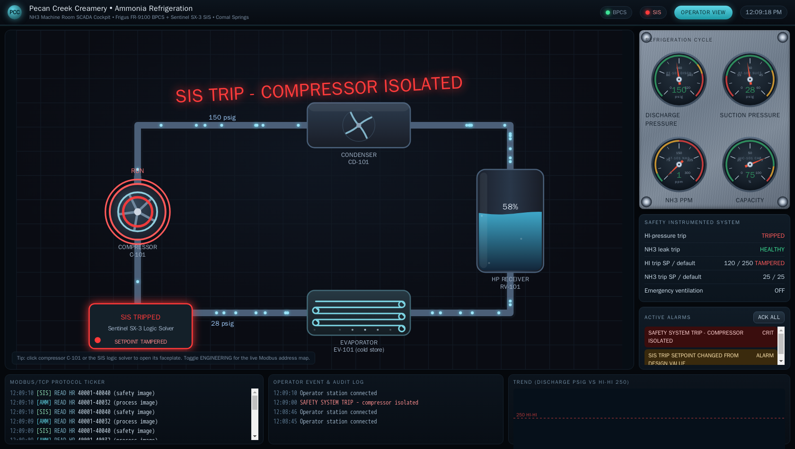

Exercise OTSOC-4.1: Meet the Ammonia Safety PLC
Engagement Status
| Client | Pecan Creek Creamery (fictional) |
|---|---|
| Role | OT SOC Analyst, Refrigeration and Process Safety |
| Phase | Safety Detection Response Reporting |
What you know so far: The anhydrous-ammonia refrigeration plant runs on two separate controllers. A basic process control system (BPCS) annunciates pressure and leak status. A separate safety-instrumented system (SIS) owns every trip that protects against a physical release. Plant engineering wants you to confirm, read-only, that the independent SIS is healthy, proven, and at design before the team trusts a single alarm it raises.
Scenario
Pecan Creek Creamery refrigerates its cold rooms with anhydrous ammonia (NH3). Two controllers sit on the refrigeration segment. The BPCS at ammonia.pcc.local reads suction and discharge pressure and a leak-ppm sensor, and it raises status when a value crosses a band. The BPCS holds no trip authority. The independent SIS at sis.pcc.local is the last line of defense: it owns the high-discharge-pressure trip, the NH3 leak trip, and the emergency-ventilation start.
You do not need to hand-write a Modbus script to make this call. The control room watches a real operator station, the Ammonia Operator HMI, served over HTTP. The HMI reads the SIS live over Modbus and renders it on a proper safety faceplate. Your assignment is to open that HMI in a browser, find the SIS faceplate, and make a defender's judgment: is the safety system independent, proven at boot, and still set to its design values. The certificate the faceplate publishes when all of that holds is your flag. You read only; the faceplate is a read-only view.
Why this matters
In OT the priority order is inverted. Safety comes before Integrity, before Availability, before Confidentiality. The worst case on an ammonia plant is not a lost historian read or a stopped line. The worst case is a physical anhydrous-ammonia release. NH3 reaches its IDLH (immediately dangerous to life or health) concentration at 300 ppm, the level at which a worker cannot escape without injury. The high-discharge-pressure trip and the leak trip exist to stop a release before it reaches that point.
IEC 61511, the safety standard for the process industries, requires the SIS to be independent of the BPCS: its own controller, its own segment, its own logic. A compromise of the BPCS must not be able to reach the trips. The faceplate makes three things legible to a defender at a glance: that the SIS is a separate controller, that it proved its own trip logic at boot, and that its live trip setpoints still equal the read-only design values. A live setpoint that no longer matches design is the TRITON-style tamper signature: the trip is still armed on the screen, but it fires at the wrong number. Reading those three facts off the instrument is the foundation for every safety call you make later in the track.
| Credentials in scope | Username | Password | Where it is used |
|---|---|---|---|
| None | n/a | n/a | The operator HMI and the underlying Modbus are unauthenticated; no login is needed |
Learning Objectives
- Open the Ammonia Operator HMI in a browser and locate the independent SIS faceplate
- Identify the SIS as a separate controller from the BPCS under IEC 61511 independence
- Confirm both SIS trips read HEALTHY with live setpoints matching design and no TAMPERED badge
- Confirm the boot proof test passed and the PROOF TEST entry sits in the SIS incident log
- Read the proof-test certificate off the faceplate and submit it as the flag
| Detail | Value |
|---|---|
| Difficulty | Intermediate |
| Estimated Time | 40 to 50 minutes |
| Prerequisites | OTSOC-1.1 plant tour, basic Modbus and HMI concepts |
| Flag | Source | Found? |
|---|---|---|
OCR{...} |
SIS faceplate PROOF TEST CERTIFICATE block |
Background: BPCS Versus SIS, Read From the Faceplate
A defender tells a BPCS apart from a SIS by who owns the trips. The BPCS annunciates: it raises a status light so an operator looks, but it cannot stop a release on its own. The SIS owns the high-pressure trip, the leak trip, and the emergency ventilation, and it is required to live on its own controller and segment. The operator HMI puts the SIS on its own panel, labeled "Safety Instrumented System (Independent)", precisely so the control room never confuses the two.
The SIS faceplate exposes the three facts a defender needs:
| Faceplate item | What it tells you | Healthy reading |
|---|---|---|
| Independence | Whether the SIS is its own controller | SEPARATE CONTROLLER FROM BPCS |
| Trip table (State) | Whether each trip is armed and idle or currently fired | HEALTHY (not TRIPPED) |
| Trip table (Setpoint vs Design) | Whether the live trip point still equals design | live equals design, no TAMPERED badge |
| Last proof test | Whether the SIS exercised its own logic at boot | PASSED |
| Incident log | The audit trail of SIS events | one PROOF TEST entry on a clean boot |
| PROOF TEST CERTIFICATE | The commissioning proof, valid only when healthy and untampered | green block showing the certificate string |
Inverted triad on an ammonia plant
IT security defaults to Confidentiality, Integrity, Availability. OT flips it: Safety, then Integrity, then Availability, then Confidentiality. On this plant Safety is literal. A defeated or mis-set trip can put NH3 in the air at 300 ppm IDLH. Every reading on the faceplate is ranked against that physical consequence first.
Before You Begin: Find the HMI in the Panel
Every step in this walkthrough is done from your browser. After the lab reaches Running, the Exercise Network panel on the track page lists the Operator HMI alongside the two PLCs, each with its IP. The HMI is the host you open in a browser; you address it by the IP shown in the panel, never by a hard-coded lab octet.
Kali - confirm the HMI is serving before you open it
Substitute the HMI IP from the Exercise Network panel for HMI_IP. A 200 OK (or any HTTP response) means the operator station is up.
An HTTP status line means the HMI is live. If the request hangs, the lab is not fully Running yet, or you copied the IP wrong from the panel.
Walkthrough
Step 1: Open the Operator HMI
Open the Ammonia Operator HMI in your browser using the HMI IP from the Exercise Network panel on port 80. You land on the live operator station: an animated P&ID mimic with the compressor and condenser, analog gauges for suction and discharge pressure and NH3 ppm, and an alarm strip. The whole screen updates live as the HMI polls the plant.
Kali - open the operator HMI in the browser
In your browser address bar, enter the HMI IP from the panel on port 80, for example http://HMI_IP/.
What the operator station shows
The main mimic shows the refrigeration loop running, gauges reading a calm plant (discharge near its normal band, NH3 ppm in the single digits), and a right-hand panel titled Safety Instrumented System (Independent) with a FACEPLATE button. The safety panel sitting on its own, separate from the process controls, is the visual cue that the SIS is independent of the BPCS.
The operator cockpit
The Pecan Creek Creamery ammonia operator station renders the refrigeration loop live: the compressor and condenser on the animated mimic, the suction and discharge pressure gauges, the NH3 leak reading, and the independent Safety Instrumented System panel reporting SIS ARMED on a clean boot.

Flip the cockpit into its Engineering view and every element is labelled with the live PLC register behind it, so the SIS trip setpoints read straight off the HMI next to the BPCS process image. The same registers you reason about on the faceplate sit one click away as a live register map.

Step 2: Open the SIS Faceplate and Confirm Independence
Click the FACEPLATE button on the "Safety Instrumented System (Independent)" panel. A modal opens showing the SIS state read live from the safety PLC over Modbus. The first line is the independence statement.
Independence line on the SIS faceplate
The faceplate header reads Independence: SEPARATE CONTROLLER FROM BPCS. That is the IEC 61511 requirement made visible: the safety logic runs on its own controller, not on the BPCS, so a compromise of the process controller cannot reach the trips. A defender who can see this line knows which box actually owns the protection.
Step 3: Confirm Both Trips Are Healthy and at Design
Below the independence line is the trip-function table. Each row is a protective trip: High discharge pressure and NH3 leak. For each row read three things: the State, the live Setpoint, and the Design setpoint.
Trip-function table on a clean boot
Both rows read State: HEALTHY (armed and not currently tripped). The High discharge pressure row shows Setpoint 250 / Design 250, and the NH3 leak row shows Setpoint 25 / Design 25. Because each live setpoint equals its design value, there is no red TAMPERED badge on either row.
Read the State and the Setpoint-versus-Design together, because they answer two different questions. State tells you the trip is not currently asserted: a HEALTHY trip is armed and waiting, a TRIPPED trip has already fired and the plant is in a safe state. Setpoint-versus-Design tells you the trip will fire at the right number. A trip can read HEALTHY while its setpoint has been quietly raised, so the leak trip that should fire at 25 ppm now waits until a far more dangerous concentration. The faceplate flags that with a red TAMPERED badge whenever the live setpoint differs from the read-only design value. On a clean boot you want HEALTHY, matching setpoints, and no badge on both rows.
The contrast is worth seeing before you ever meet it on the live plant. When a SIS trip fires, the cockpit drops to its safe state and the operator gets one unambiguous screen.

Step 4: Confirm the Boot Proof Test Passed
A trustworthy SIS proves itself at startup by exercising its own trip logic once and recording the result. The faceplate reports the outcome on the Last proof test line, and the test itself appears in the SIS incident log table below.
Proof-test status and the incident log
Last proof test reads PASSED (tested Hi-P 250 psig / NH3 25 ppm). In the SIS incident log table there is one entry, a PROOF TEST row logged at boot. A SIS that came up healthy logs exactly this: one proof-test event and nothing else. An empty log means the SIS has never demonstrated that its trips fire, so a defender has no evidence the protection is live.
The proof test and the trip table reinforce each other. The proof test was run at 250 psig and 25 ppm, the same numbers the trip table now shows as the design setpoints. A SIS that proved itself at the design values and still carries those design values is one you can trust to fire correctly.
Step 5: Read the Proof-Test Certificate (the Flag)
At the bottom of the faceplate is the PROOF TEST CERTIFICATE block. The HMI colors it green and shows the certificate string only when two conditions both hold: the SIS proved itself at boot, and both trip setpoints still match design. If a setpoint had been changed from design, the block would instead turn red and read CERTIFICATE INVALID, because a tampered safety function cannot be certified as proven.
The PROOF TEST CERTIFICATE block
Because the SIS is healthy, proven, and untampered, the certificate block is green and shows PROOF TEST CERTIFICATE followed by the certificate string in OCR{...} form. That certificate string is the flag for this exercise. Read it off the panel and submit it in the OCR platform.
The certificate is not a trivia token hidden in a register; it is the instrument's own statement that the safety system is independent, proven, and at design. Treating a green, valid certificate as the deliverable mirrors how an operator or an SOC analyst actually signs off on a safety system: by reading the faceplate, not by decoding raw protocol bytes.
Optional: Verify the Faceplate Against the Wire
The faceplate is the way you get the flag. For analysts who want to confirm the instrument is telling the truth, a single read of the SIS incident counter proves the proof-test really happened on the PLC and is not just a UI label. Holding register 40890 is incident_count; on a clean boot it reads 1, the one proof-test event. The Modbus protocol offset is 889 (40890 minus the 40001 base). Replace SIS_IP with the SIS IP from the Exercise Network panel.
Kali (optional) - confirm the proof-test on the wire
A printed incident_count: 1 matches the single PROOF TEST entry the faceplate showed. The faceplate and the wire agree. The flag still comes from the certificate on the faceplate, not from this read.
Output Interpretation
- The SIS sits on its own faceplate, labeled Independent, separate from the BPCS process controls. Independence is shown as SEPARATE CONTROLLER FROM BPCS.
- HEALTHY on a trip row means armed and not currently tripped. TRIPPED means the trip has fired and the plant is in a safe state.
- Live setpoint equal to design with no TAMPERED badge means the trip will fire at the right number. A red TAMPERED badge is the tamper signature even when the State still reads HEALTHY.
- Last proof test PASSED plus a single PROOF TEST entry in the incident log proves the SIS exercised its own logic at boot.
- A green PROOF TEST CERTIFICATE is the instrument certifying the SIS is independent, proven, and at design. A red CERTIFICATE INVALID would mean a setpoint was changed from design.
Analysis Questions
1. The BPCS raised a discharge-high status. Is that a safety control?
Reveal answer
No. The BPCS annunciates; it has no trip authority. A status light on the BPCS tells an operator to look, but it cannot stop a release on its own. Only the SIS owns the trips, which is why the SIS lives on its own faceplate. Treating a BPCS annunciation as a safety guarantee is the exact confusion that lets an attacker defeat the real safety function while the operator watches a green BPCS screen.
2. Why does IEC 61511 require the SIS to be independent of the BPCS, and how does the faceplate show it?
Reveal answer
Independence means a single failure or a single compromise cannot take out both the control function and the protective function at once. If the SIS shared the BPCS controller and segment, an attacker who owned the BPCS would also own the trips, and there would be no last line of defense. The faceplate states this directly with SEPARATE CONTROLLER FROM BPCS, and the SIS having its own panel on the HMI is the operator-facing expression of the same separation.
3. A trip row reads HEALTHY but carries a red TAMPERED badge. Is the plant protected?
Reveal answer
Not at the design level. HEALTHY only means the trip is armed and has not fired yet. The TAMPERED badge means the live setpoint no longer equals the read-only design value, so the trip will fire at the wrong number, for example a leak trip that should act at 25 ppm now waiting until a far more dangerous concentration. A defender reads State and Setpoint-versus-Design together; a HEALTHY-but-TAMPERED trip is a defeated safety function dressed up as a healthy one, and it invalidates the proof-test certificate.
4. The certificate block is green and valid. What two conditions does that confirm?
Reveal answer
A green, valid certificate confirms both that the SIS proved itself at boot (the proof test passed and is logged) and that both trip setpoints still match their design values (no tamper). The HMI ties the certificate to both conditions on purpose: a SIS that never proved itself, or one whose setpoints were changed, cannot be certified, so the block turns red CERTIFICATE INVALID instead.
Key Takeaways
- A BPCS annunciates; a SIS trips. On the operator HMI the SIS lives on its own Independent faceplate, which is how a defender tells them apart at a glance.
- The independence required by IEC 61511 is shown as SEPARATE CONTROLLER FROM BPCS on the faceplate.
- Read trip State and Setpoint-versus-Design together: HEALTHY with matching setpoints and no TAMPERED badge is a trip that is both idle and set to fire at the right number.
- A healthy SIS proves itself at boot; Last proof test PASSED plus a single PROOF TEST entry in the incident log is the signature.
- The green PROOF TEST CERTIFICATE is the instrument certifying the SIS is independent, proven, and at design; that certificate string is the flag.
- Read every IP from the Exercise Network panel; open the HMI by its panel IP on port 80 and never hard-code a lab octet.
Capture the Flag
Open the Ammonia Operator HMI in your browser using the HMI IP from the Exercise Network panel on port 80, open the SIS faceplate from the "Safety Instrumented System (Independent)" panel, and read the green PROOF TEST CERTIFICATE block. The certificate string it displays is the flag. Submit it in the OCR platform.
| Flag | Where | Form |
|---|---|---|
| SIS proof-test certificate | SIS faceplate PROOF TEST CERTIFICATE block | OCR{...} |